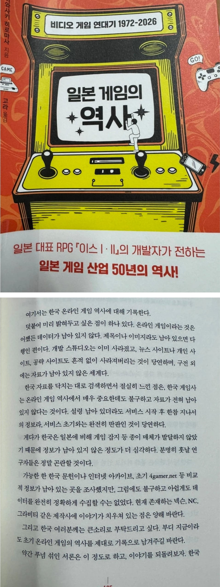

기록이 없다...

기록이 없다...
한 주마다 새 게임이 나오고 망하고 그랬으니 그럴만도 하지...
넷파워 보라그래
'건잠머리 게임나라'라고 세종컴퓨터랜드에서 팔던 쉐어게임모음 번들시디가 있는데. 여기에 당시 한국게임 데모 많이 실려있다. 어쩐지저녁.광개토대왕.삼국지세균전 등.
게이머즈만 봐도
눈을 뜨고싶구나. 로미갤로 와라
저거랑 비슷하게 하이텔 같은 피씨통신 시절부터 인터넷이 폭발적으로 확장할 시기가 역사적으로 되게 중요하게 다룰 수 있는 시긴데, 자료가 하나도 없다 함.
2000년 초반 온라인 게임은 네이버 다음카페가 나름 유용함
당장 아바도 초창기 그래픽 만들어놓은거 그냥 병신같이 버린거보면
아바하다가 블랙스쿼드러 넘어갔었는데
재밌었엉
아바 존잼이었는데ㅋㅋ
피와 기티
라스 더 원더러
난 진공작왕이 내 첫 온라인겜인데 ㅋㅋ 아직도 기억남
참고로 90년대말 00년대 초 정보들은 전부는 아니라도 상당히 많은 양이 게임메카 가면 남아 있음.
게임 메카가 과거 게임 잡지 팔던 제우미디어가 낸 온라인 웹진임.
얘네가 2010년대 초반 이후로 커뮤니티 기능은 사실상 상실하고, 2010년대 중반부터는 과거 90년대 말 00년대 초중반까지 발행한 게임 잡지들 온라인화 해서 공개하는걸로 콘텐츠를 바꿈.
그래서 거기 지금 가보면 넷파워, PC파워진,PC 챔프, 게임챔프 등 당시 나온 굵직한 게임 잡지들 다 볼 수 있음.
정정, 지금 그냥 전부 다 볼 수 있게 바뀐듯. 지금 가보면 게임챔프 92년도 창간호부터 다 볼 수 있게 나옴
아 그럼 내가 종종 생각나던 게임도 있을 수 있겠네
게임메카가 제우미디어꺼였구나
오늘처음알았네
오
가끔 옛날게임 추억딸 치고싶어서 찾아보는데 안나와서 슬프긴하더라
인수인계 문화 씹창난 한국 공무원 집단 아래에서
국가 기록은 제대로 관리 되고 있는 건지 모르겠음
저거 진짜 라그게이트처럼 극소수 살아있는데 아니면 가이드북밖에 방법없긴할거라
라그게이트도 죽지 않았나
나무위키 켜라
ㅜㅜ 내 9살 생일로 아빠가 사준 조선협객전 공략집 어디갔어~~~~~~~~~~~~~~~~~~~~~~~~~~~~~~~~~~~~
싸비라는 사람이 발간한 메이플스토리 공략집도 있었는데......어디간겨 ㅠ
창천 온라인
프리스트 온라인
쟁으론 진짜 재밌었던 게임들인데…ㅠㅠ
카페9 아는사람?
디지털 기록이 물리적으로는 흔적이 있으나 그 흔적으로 식별가능한 데이터로 만드는게 불가능한 경우가 많지
그리고 그 물리적 흔적들은 전부 폐기됐을거고
우리나라 게임 역사는 90년대 중반 부터 시작하지 않았나
개인적으로 초딩 때 했던 네오스팀이 지금 생각해보면 와우 같은 느낌이라 재밌게했었음
옛날게임들 진짜 데이터가 없긴함
영상하나만 남아있는 것도 있고
데이터는 많았는데 사이트가 망해서 지워져버린것도 많고
인더스문명같은건가ㅋㅋ
ㅇㅇ 진짜 없어 데이터가 예전에 봤던 야동 없어.. 데이터가..

개발자들은 홍수기지만
그시절 나같은 초딩한테는 황금기였음
정액제 돈없어서 오베만 하다가 다른게임 생기면 옮기고 반복해서 아직도 기억남
바람 어둠 일렌시아 엘리멘탈사가 라그하임 드로이얀 다크에덴 샤이닝로어 포가튼사가 이터널시티 씰온라인 프리스톤테일 라그나로크 트릭스터
이름 기억안나는거 많지만 졸라잘즐김 ㅋㅋ
픽이 거의 90초~90중반인데
바람의나라 공략집 파란색 살색 검정색 있는데..ㅋㅋ 마비노기 공략집도 찾아보면 한 권 정도 있을듯
워바이블 스타체이스... 갓겜
그때있던 네캎들도 게임 망하면 카페도 문 닫아버리거나 팔았으니...
예전 바람의 나라 같은 머드 게임들, 기록이라도 좀 남아 있는지 모르겠네
한때 맘에 드는 게임이없어서 게임방랑자 생활했었는데 일주일마다 게임 바꿔도 할게 많았던때가있었음..여캐가 로봇타고 다니는 겜 있었는데 대체 뭔겜이였을까...
다음 카페 날라가면서 온라인 자료들 많이 날라간거같아서 아쉽긴함
이거랑 비슷하게 파일박스였나 거기 데이터 싹 날아간거 너무 아깝더라
불법 자료 공유의 온상이었지만 본문처럼 그 자체로 역사로 불릴만한 파일들이 많았을텐데
닌텐도 게임에 비하면 완성도 차이가 너무 심해서 ㅜㅜ 갈길이 멀다
이글루스 날라가면서 더 없어짐
게이머즈 같은거 뒤지면 거진 나올텐데
많이 딥한게 필요한가